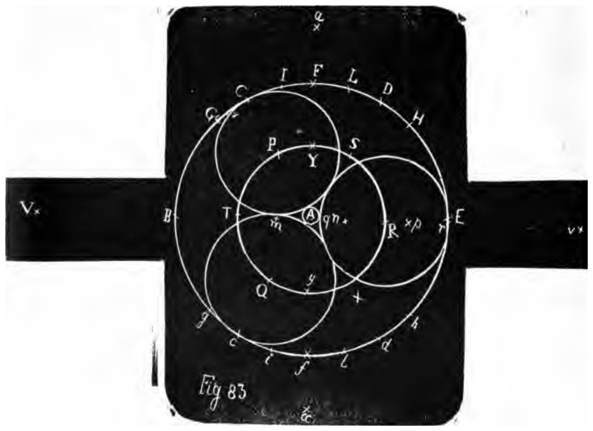

§§ 161–169: Inscribed Squares, Octagons & Area Scaling¶
161. Problem. In a given equilateral triangle \(ABC\) (fig. 79), to inscribe a square \(becd\) (§ 124).
Solution I. If we wish to make use of the given sides of the triangle, with center \(A\) and radius \(AB\), describe the semicircle \(BCDE\) (§ 64).
With center \(E\) and radius \(EC\), describe an arc cutting the given side \(AB\) at \(e\). With center \(A\) and radius \(Be\), describe an arc cutting the same side at \(b\). With centers \(b\) and \(e\) and radius \(eb\), describe two arcs cutting sides \(AC\) at \(d\) and \(CB\) at \(c\). \(becd\) will be the inscribed square.

Demonstration. Putting for brevity \(AB = 1\), we shall have \(Ee = EC = BD = \sqrt{3}\) (§ 2); hence \(Be = BE - Ee = 2 - \sqrt{3} = Ab\); hence \(be = AB - 2Ab = 2\sqrt{3} - 3 = (2 - \sqrt{3})\sqrt{3} = ec\). Therefore \(Be : ec :: (2 - \sqrt{3}) : (2 - \sqrt{3})\sqrt{3} :: 1 : \sqrt{3}\).
But if \(AB\) be supposed bisected at \(T\) by the perpendicular \(CT\), we shall also have \(BT : TC :: \frac{1}{2} : \frac{1}{2}\sqrt{3}\) (§ 104); that is, \(BT : TC :: 1 : \sqrt{3}\).
f. 0116 · p. 91Therefore \(ec\) is parallel to \(TC\) (2, Book VI), and hence perpendicular to \(AB\) (27, Book I). The same will be demonstrated for \(db\). Hence \(becd\) is the inscribed square.
Solution II. If, however, we do not wish to make use of the intersection of the given sides of triangle \(ABC\), but only the three extreme points \(A\), \(B\), and \(C\) of the triangle are given and the four points \(b\), \(e\), \(c\), \(d\) of the square to be inscribed must be found:
With center \(E\), as before, and radius \(EC\), mark an arc passing through \(e\), \(C\), and \(a\). With the same radius and center \(B\), mark an arc cutting the preceding one at \(a\). With radius \(AB\) and center \(a\), cut semicircle \(BCDE\) at \(H\). Make on it \(Ha = HI = IK\).
With radius \(aK\) and center \(D\), describe an arc passing through \(e\). Point \(e\) will be determined.
With radius \(Be\) and center \(A\), draw an arc through \(b\). With radius \(Ce\) and center \(C\), draw another arc cutting the last at \(b\). With radius \(be\) and centers \(b\) and \(C\), mark two arcs intersecting at \(d\). With the same radius \(be\) and centers \(e\) and \(C\), mark two arcs intersecting at \(c\). \(becd\) will be the square sought.
Or, having completed circle \(BCDE\delta\) and made \(AB = E\delta\), with radius \(aK\) determined as above and centers \(D\) and \(\delta\), describe two arcs intersecting at \(e\). Let the rest be done as above.
Demonstration. Point \(K\) will here have been determined as in figure 9 (§ 32) by means of the same point \(a\), so that arc \(BK\) will be a twenty-fourth part of the circumference. Now in figure 9, since \(BK = Bk = EM\), if points \(a\), \(K\), \(B\), \(k\), \(A\), \(M\) be compared with points \(Q\), \(A\), \(R\), \(S\), \(p\), \(B\) of figure 4, from equation \((AQ)^2 = (RQ)^2 - AS \cdot pQ\) (§ 20) there will result for figure 9 the equation \((aK)^2 = (Ba)^2 - Kk \cdot Aa\). Now \(Kk\) is the chord of a twelfth part of the circumference. To find its value, supposing for brevity \(AB = 1\), we have the sine of \(BN = Kk = AX\) (fig. 12) \(= \frac{1}{2}\), and twice its cosine, namely \(2NX = NO = BD = \sqrt{3}\): hence if in the equation (§ 160) \(\mathrm{chord}\,x = \sqrt{2 - 2\cos x}\) we substitute in place of \(x\) the arc \(Kk\), and in place of \(2\cos x\), \(\sqrt{3}\), we shall have the line \(Kk = \sqrt{2 - \sqrt{3}} = \sqrt{\frac{3}{2}} - \sqrt{\frac{1}{2}}\). Hence \((aK)^2 = 3 - \left(\sqrt{\frac{3}{2}} - \sqrt{\frac{1}{2}}\right)\sqrt{2}\) (§ 27) \(= 3 - (\sqrt{3} - 1) = 4 - \sqrt{3}\).
f. 0117 · p. 92Now if with centers \(D\) and \(\delta\) and radius \(aK\) we mark two arcs intersecting at \(e\), point \(e\) will lie on line \(BE\) (§ 13), which will bisect \(D\delta\) at point \(R\) at right angles (§ 14), making \(RD = \frac{1}{2}\sqrt{3}\) (§ 104). Therefore since \((De)^2 = (DR)^2 + (eR)^2\) (47, Book I), we shall have \((eR)^2 = (De)^2 - (DR)^2 = 4 - \sqrt{3} - \frac{3}{4} = \frac{13 - 4\sqrt{3}}{4}\), and hence \(eR = \sqrt{3} - \frac{1}{2}\) and \(eE = \sqrt{3}\). Therefore, by the demonstration of Solution I, point \(e\) is one of the vertices of the square. It will likewise be the same if it is found with centers \(D\) and \(E\) and the two radii \(aK\) and \(BD\), as in the first part of this Solution II. Moreover, since the two triangles \(CAb\), \(CBe\) have their sides equal to each other, angle \(CBe = CAb\) (8, Book I) \(= CBA\). Hence point \(b\) will lie on \(BA\), and will be another vertex of the square. Finally, since in this Solution lines \(Cb\), \(Ce\) are the same in position and magnitude as in the first Solution, and since in the first Solution \(Cd = bd\), \(Cc = ec\) by reason of equilateral triangle \(Ccd\) and the parallelism of \(cd\) to \(BA\) (2, Book VI), points \(d\) and \(c\) will also be determined in this Solution as in the first.
162. Problem. In the square \(ABLF\), to inscribe an equilateral triangle (fig. 80) having one angle \(B\) at an angle of the square.
Solution I. With center \(A\) and radius \(AB\), describe the semicircle \(BFE\), making \(FB = FE\); make also \(BE = BQ = EQ\). If we wish to make use of the intersections of the given sides of the square, with center \(F\) and radius \(FQ\) describe an arc cutting two sides of the square at points \(M\) and \(N\); points \(B\), \(M\), \(N\) will be the vertices of the triangle sought.
f. 0118 · p. 93Demonstration. Since angle \(QAB\) is right (§ 83), we shall have \((BQ)^2 = (AB)^2 + (AQ)^2\) (47, Book I), and taking for brevity \(AB = 1\), we shall have \(4 = 1 + (AQ)^2\); hence \(AQ = \sqrt{3}\); \(FQ = AQ - AF = \sqrt{3} - 1 = FM = FN\). Therefore \((FM)^2 = (FN)^2 = 4 - 2\sqrt{3}\), and thus \((MN)^2 = (FM)^2 + (FN)^2 = 8 - 4\sqrt{3}\). Since moreover \(LM = LF - FM = 1 - (\sqrt{3} - 1) = 2 - \sqrt{3}\), we shall have \((LM)^2 = 7 - 4\sqrt{3}\). Hence \((BM)^2 = (BL)^2 + (LM)^2 = 8 - 4\sqrt{3} = (MN)^2\). Likewise \((BN)^2 = (MN)^2\) is shown. Therefore \(BM = MN = BN\).
Solution II. If only the four vertices \(A\), \(B\), \(L\), \(F\) of the square be supposed given, having found point \(Q\) as in Solution I, with center \(F\) and radius \(FQ\) describe the circumference \(QRSNM\), and having made \(FQ = QR = RS = SN\), with center \(B\) and radius \(BN\) cut this circumference at point \(M\). Points \(B\), \(N\), \(M\) will be the vertices of the triangle sought.
Demonstration. Arc \(QRSN\) is half the circumference (15, Book IV). Hence point \(N\) lies on line \(QFA\), and is equally distant from \(F\) as in Solution I; therefore it is the same. Point \(M\) in Solution I is also found at the intersection of two arcs described with centers \(F\) and \(B\) and radii equal to \(FQ\) and \(BN\), as in this one; hence it is the same. Hence, etc.
163. Problem. In an equilateral triangle, of which the vertices \(P\), \(Q\), \(R\) are given (fig. 81), to inscribe a regular hexagon.
Solution. Divide distance \(QR\) into three equal parts at points \(c\) and \(d\) (§ 68). With centers \(c\) and \(d\) and radius \(cd\), mark two arcs intersecting at \(A\). With the same radius and center \(A\), describe a circle, and make on its circumference \(dc = cB = BC = CD = DE\). Points \(B\), \(C\), \(D\), \(E\), \(d\), \(c\) will be the vertices of the inscribed hexagon.
Demonstration. Triangle \(BcQ\) has sides \(Bc\), \(Qc\) equal to sides \(Ad\), \(cd\) of triangle \(Adc\), and the contained angle equal by the parallelism of \(Bc\), \(Ad\) (27, Book I). Therefore it is equal to it in every respect (4, Book I), and angle \(cQB = dcA = cQP\).
f. 0119 · p. 94Hence point \(B\) lies on \(PQ\). Likewise it is demonstrated that the other points \(C\), \(D\), \(E\) lie on the sides of the proposed triangle. Hence, etc.
164. Problem. In a given square \(ABLF\) (fig. 82), to inscribe a regular octagon.
Solution I. If we wish to make use of the intersection of the given sides of the square, with center \(A\) and radius \(AB\) describe the semicircle \(BCDE\), making \(AB = BC = CD = DE\). Make \(BF = BQ\), \(EA = EQ\). With radius \(AQ\) and center \(A\), cut two sides at \(b\) and \(g\). With the same radius and centers \(B\), \(L\), and \(F\), cut the sides successively at points \(a\), \(d\), \(c\), \(f\), \(e\), \(h\). These will be the vertices of the octagon \(abcdefgh\).
Solution II. Having found point \(Q\) as in Solution I, with radius \(AQ\) and centers \(A\) and \(B\), mark two arcs intersecting at \(O\). With the same radius and center \(A\), cut side \(AB\) at \(b\). With center \(O\) and radius \(Ob\), describe a circle cutting the sides of the square at the remaining points \(c\), \(d\), \(e\), \(f\), \(g\), \(h\), \(a\). These will be the vertices of the octagon.
Solution III. If the sides of the square were not given, but only the four vertices \(A\), \(B\), \(L\), \(F\), having found point \(Q\) as in Solution I, make \(EC = EM\), \(BF = BM\). With radius \(AM\) and center \(A\), describe an arc passing through \(e\), \(d\). With the same radius and center \(B\), describe an arc passing through \(f\), \(g\). With the same radius and center \(L\), describe an arc passing through \(h\), \(a\). With the same radius and center \(F\), describe an arc passing through \(b\), \(c\). With radius \(AQ\) and centers \(A\), \(B\), \(L\), \(F\), cut these arcs at points \(b\), \(g\), \(d\), \(a\), \(c\), \(f\), \(e\), \(h\). These will be the vertices of the octagon.
Demonstration. Supposing for brevity that \(AB = 1\), we shall have \(AM = \frac{1}{2}\sqrt{6}\) (§ 104); \(AQ = \frac{1}{2}\sqrt{2}\). Hence \((Ad)^2 = (AM)^2 = \frac{6}{4} = 1 + \frac{1}{2} = (AB)^2 + (Bd)^2\), since \((Bd)^2 = (AQ)^2 = \frac{1}{2}\). Therefore angle \(ABd\) will be right (48, Book I), and hence point \(d\) will lie on \(BL\).
f. 0120 · p. 95Likewise it will be shown that all the other points lie on the sides of the proposed square. We shall then have \(Ld = BL - Bd = 1 - \frac{1}{2}\sqrt{2} = Le\), and \((de)^2 = (Ld)^2 + (Le)^2\) (47, Book I) \(= 2(Ld)^2\), and hence \(de = Ld \times \sqrt{2} = \sqrt{2} - 1\). But we have \(cd = BL - Ld - Bc = BL - 2Ld = 1 - 2 + \sqrt{2} = \sqrt{2} - 1\).
Therefore \(cd = de\). Likewise it will be shown that all the sides of the octagon are equal to one another. Since moreover triangles \(Lde\), \(Bbc\), \(Aah\), \(Ffg\) are equal to one another in every respect (4, Book I), their angles at points \(a\), \(b\), \(c\), \(d\), \(e\), \(f\), \(g\), \(h\) will be equal; hence their supplements to two right angles, that is, the angles of the octagon, will also be equal (13, Book I).


165. Problem. Given a regular octagon \(ABhgfEGH\) (fig. 66), to find easily: 1st, the side of a regular octagon double in area; 2nd, the side of a triple octagon.
Solution. With side \(AB\) of the given octagon taken as radius, and center at \(F\) and \(H\), describe two arcs intersecting at \(a\).
f. 0121 · p. 96There will be: 1st, \(af\), or \(aA\), the side of the double octagon; 2nd, \(aB\), or \(ag\), the side of the triple octagon.
Demonstration. If \(AB = 1\) be supposed, we shall have \(aA = af = \sqrt{2}\) (§ 139); \(aB = ag = \sqrt{3}\) (§ 2). But the areas of similar figures are in the duplicate ratio of homologous sides (20, Book VI). Hence \(aA\) will be the side of a double octagon, and \(aB\) of a triple one.
166. Problem. In a circle of given radius \(AB\) (fig. 83), to inscribe three circles touching it and touching one another.
Solution. On the circumference of the given circle make \(AB = BC = CD = DE = Ed = dc\). With radius \(BD\) and center \(B\), describe an arc passing through \(a\), \(p\), and \(\alpha\). With the same radius \(BD\) and center \(E\), cut this arc at \(a\) and \(\alpha\). With the same radius and centers \(C\), \(c\), describe two arcs intersecting at \(V\); and with centers \(D\) and \(d\), two other arcs intersecting at \(v\). With the same radius and centers \(V\), \(v\), describe two arcs passing through \(m\) and \(n\). With radius \(AB\) and centers \(a\) and \(\alpha\), cut the circumference of the given circle at \(G\), \(H\), and at \(g\), \(h\). On that circumference, with the same radius, make \(AB = GL = HI = gl = hi\). Make \(Aa = BF\), \(IL = LY = IY = ly = iy\), \(Yy = Fm = Fn\), \(Dn = Dp\). With center \(A\) and radius \(mn\), describe circle \(PSRXQT\), and taking an arbitrary point \(P\) on its circumference, make \(PA = PS = SR = RX = XQ = QT\). Finally, with centers \(P\), \(Q\), \(R\) and radius \(pn\), describe three circles. These will be the ones sought.
Demonstration. Since \(IL\) is the chord of a twelfth part of the circumference (§ 32), we shall have \(IL = \sqrt{2 - \sqrt{3}}\) (§ 160). And since the square of the diameter is \((Li)^2 = (IL)^2 + (Ii)^2\) (47, Book I; 31, Book III), we shall have \(4 = 2 - \sqrt{3} + (Ii)^2\); hence \((Ii)^2 = 2 + \sqrt{3}\) and \(Ii = \sqrt{2 + \sqrt{3}}\). We shall then have (§ 20) \((aI)^2 = (aB)^2 - Ii \cdot Aa = 3 - \sqrt{4 + 2\sqrt{3}} = 3 - (1 + \sqrt{3}) = 2 - \sqrt{3}\). Hence \(aI = IL = \sqrt{2 - \sqrt{3}}\). By the same reasoning \(aL = LI\); hence \(aIYL\) will be a rhombus, and we shall have \((aY)^2 = 4(aI)^2 - (IL)^2 = 3(IL)^2\) (§ 139). Hence \(aY = IL \cdot \sqrt{3}\). But since points \(I\) and \(L\) are equally distant from \(A\), the three points \(a\), \(Y\), \(A\) will lie on the same straight line (§ 13). Hence \(AY = Aa - aY = \sqrt{2} - \sqrt{6 - 3\sqrt{3}} = \sqrt{2} - \left(3\sqrt{\frac{1}{2}} - \sqrt{\frac{3}{2}}\right) = \sqrt{\frac{3}{2}} - \sqrt{\frac{1}{2}} = IL\).
f. 0122 · p. 97The same will be shown for \(Ay\). Moreover, since point \(y\) lies on \(a\alpha\), that is, on \(aA\) (§ 13), we shall have \(Yy = 2AY\). Now points \(V\), \(B\), \(A\), \(E\), \(v\) lie on the same straight line (§ 13). If it be supposed for a moment that points \(m\), \(n\) lie on the same straight line, we shall have \(Am = AV - Vm = 2 - \sqrt{3}\). For if points \(C\), \(c\), \(V\), \(B\), \(A\), \(E\) be compared with points \(A\), \(B\), \(Q\), \(P\), \(p\), \(q\) of Fig. 3, we shall have in this Figure 83, \(VB = AE\) (§ 14), and hence \(AV = 2\). Moreover \(Vm = \sqrt{3}\). Likewise \(An = 2 - \sqrt{3}\) will be demonstrated. Hence \((Fm)^2 = (Am)^2 + (AF)^2\) (47, Book I) \(= 7 - 4\sqrt{3} + 1 = 4(2 - \sqrt{3})\). Hence \(Fm = 2\sqrt{2 - \sqrt{3}} = 2AY\). Now in the construction of the Figure we took \(Fm = 2\sqrt{2 - \sqrt{3}}\). Therefore point \(m\) will lie on line \(VA\). The same is demonstrated of point \(n\). Therefore, since \(Am = 2 - \sqrt{3}\), we shall have \(mn = 4 - 2\sqrt{3}\). Moreover, since triangles \(BpD\), \(vnD\) have their sides equal to each other, angle \(Dvn = DBp\) (8, Book I). But since angle \(Dvn\), which is the same as angle \(DvB\), equals angle \(DBV\) (5, Book I), we shall have angle \(DBp = DBv\). Therefore point \(p\) lies on line \(AE\). Further we have \(Dn = Dp\), and likewise \(dn = dp\) is demonstrated. Therefore, comparing points \(D\), \(d\), \(A\), \(n\), \(p\), \(E\) of this Figure with points \(A\), \(B\), \(Q\), \(P\), \(p\), \(q\) of Figure 3, we shall find in this Fig. 83 that \(pE = An = 2 - \sqrt{3}\). Hence \(pn = AE - 2An = 1 - 4 + 2\sqrt{3} = 2\sqrt{3} - 3\). Moreover, since equilateral triangle \(PQR\) is similar to equilateral triangle \(BDd\), and hence triangle \(ABD\) is also similar to triangle \(APR\) (20, Book VI), we shall have \(AB : BD :: AP : PR\). That is, \(1 : \sqrt{3} :: 4 - 2\sqrt{3} : PR\). Hence \(PR = 4\sqrt{3} - 6 = 2pn\). Therefore, \(PR\) being bisected at \(p\), point \(p\) will lie equally on the two circumferences of the circles described with centers \(P\) and \(R\), and \(p\) will be the point of contact (12, Book III). Now add to line \(AR = mn = 4 - 2\sqrt{3}\) the radius of the circle described with center \(R\), namely line \(Rr = np = 2\sqrt{3} - 3\); we shall have \(Ar = 4 - 3 = 1 = AB\). Therefore point \(r\) will lie equally on both circumferences, and the circle described with center \(R\) will touch the given circle internally (11, Book III). The same will be shown of the others. Hence, etc.
167. This Problem is solved elegantly by Thomas Simpson (Select. Exercises Etc. Geometrical Problems, Prob. 13) with circle and straightedge.
f. 0123 · p. 98From our construction it appears that it can be solved even more briefly with straightedge and compass than Simpson does, if, having drawn the straight line \(Vav\) and made on it \(AB = BV = Ev\), we make \(BD = Vm = Bv = vm\), describe with center \(A\) and radius \(mn\) the circle \(PQR\), and do the rest as in the preceding Solution.
168. Problem. With center \(A\) (fig. 83), to describe a circle touching externally the three circles inscribed by the preceding Problem (§ 166) in a given circle.
Solution. Seek a third proportional to the two lines \(AB\), \(Am\) (§ 86). With this taken as radius and center \(A\), describe a circle. It will be the one sought.
f. 0124 · p. 99Demonstration. Since \(AB = 1\), \(Am = 2 - \sqrt{3}\), the third proportional will be \(= 7 - 4\sqrt{3}\). Now if from radius \(Ar = 1\) we subtract the diameter \(qr\) of the circle described with center \(R\), that is, if we subtract \(2np = 4\sqrt{3} - 6\), we shall obtain precisely \(7 - 4\sqrt{3}\). Therefore a circle described with center \(A\) and that third proportional will touch this inscribed circle at point \(q\) (12, Book III), and will likewise touch the other two circles.
169. Problem. In a circle of given radius \(AB\) (fig. 84), to inscribe four circles tangent to it and to one another.
Solution. On the circumference of the given circle make \(AB = BC = CD = DE\). Then \(BD = Ba = Ea\); then \(Aa = BF = Bf\); then \(AB = FN = FO\); then \(BD = NP = OP\). With center \(A\) and radius \(aP\), describe the circle \(QRST\). Having taken an arbitrary point \(Q\) on its circumference, make on it \(BQ = FR = ES = fT\). With centers \(Q\), \(R\), \(S\), \(T\) and radius \(aF\), describe four circles. These will be the ones sought.
Demonstration. Since \(BF = FE = Ef = fB\) (§ 27), we shall also have \(QR = RS = ST = TQ\) (§ 93). Hence angle \(TAQ\) will be right. Therefore \((TQ)^2 = (AT)^2 + (AQ)^2 = 2(AT)^2\). Then taking \(AB = 1\), we shall also have \(FP = 1\) (§ 166); hence \(AP = 2\). Also \(Aa = \sqrt{2}\) (§ 27); hence \(aP = 2 - \sqrt{2}\); \(aF = \sqrt{2} - 1\). Hence \(2(AT)^2 = 2(aP)^2 = (TQ)^2 = 2(2 - \sqrt{2})^2\), and \(TQ = (2 - \sqrt{2})\sqrt{2} = 2\sqrt{2} - 2 = 2(\sqrt{2} - 1) = 2aF\).
Therefore the distance between the two centers \(T\) and \(Q\) equals the sum of the radii of the two circles described with these centers. Hence they touch each other at the midpoint of \(TQ\) at \(p\). The same will be proved of any other two. Then let \(r\) be the point where \(AR\) produced cuts the circle described with center \(R\); we shall have \(Ar = AR + Rr = aP + aF = PF = 1 = AB\). Therefore point \(r\) will lie on the circumference of the given circle. Hence \(Ar\), passing through the two centers \(A\) and \(R\), will be perpendicular to the tangent of both at point \(r\); hence they will touch each other (13 and 16, Book III). The same is demonstrated of the others.